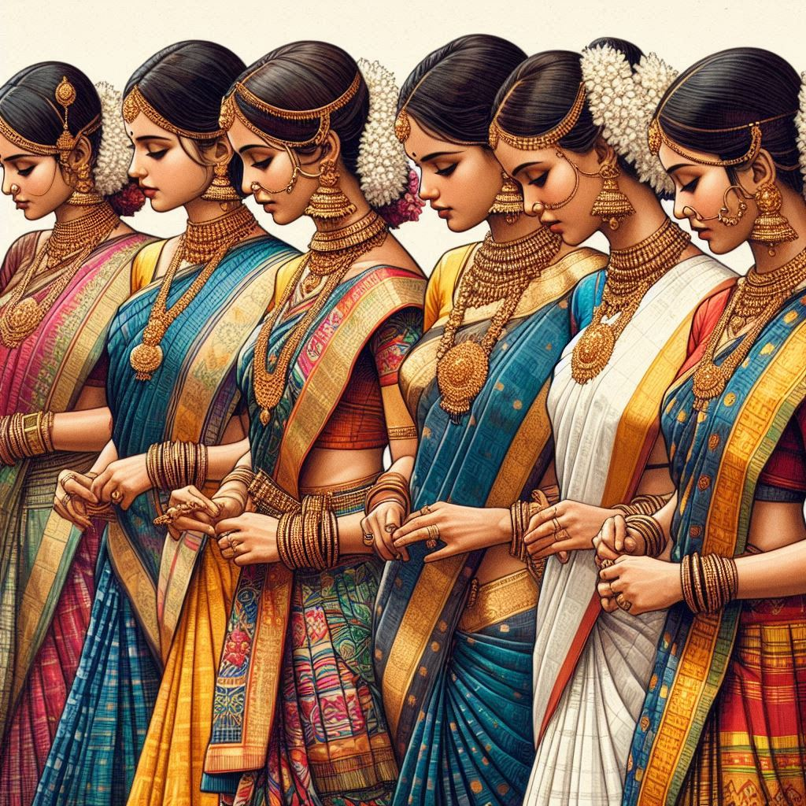
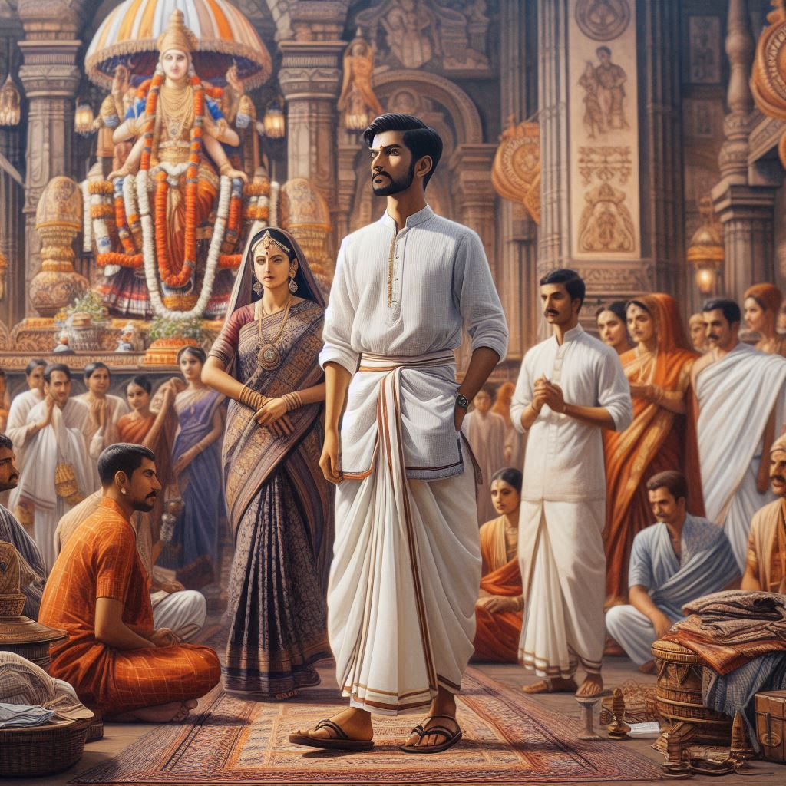

Dress of Karnataka
The traditional dress of Karnataka reflects the state's diverse cultural heritage, with distinct variations for men and women, influenced by the geographical regions and the rich history of the state. The attire is often vibrant and intricately designed, aligning with the state's colorful festivals and cultural celebrations.
Women’s Traditional Dress
- Saree: The saree is the most popular traditional attire for women in Karnataka. Women often wear sarees made of cotton or silk, especially during festivals and ceremonies. The Mysore silk saree, known for its elegance and fine texture, is one of the most famous types of saree in the state.
- Choli and Langa: In some parts of Karnataka, especially in the coastal region, women wear a traditional outfit called the Langa and Choli. The Langa is a long skirt, while the Choli is a fitted blouse. This attire is often seen during traditional dance forms like Yakshagana and on festive occasions.
- Dupatta: The dupatta (a long scarf) is often worn with a salwar kameez or chudidar, adding a touch of elegance to the attire.
- Jewelry: Women in Karnataka wear traditional jewelry made of gold, silver, and sometimes, precious stones. The Mysore Jewels are a significant part of Karnataka's cultural heritage, including ornate necklaces, bangles, ear tops, and headpieces.
- Footwear: Women generally wear ballet flats, chappals, or traditional Kolhapuri chappals, which are crafted from leather and are extremely comfortable.


Men’s Traditional Dress
- Dhoti or Panche: The traditional attire for men in Karnataka is the dhoti or panche, particularly worn during weddings, festivals, or religious ceremonies. It is usually paired with a shirt or a kurta.
- Kurta and Pyjama: Men often wear a kurta (a long tunic) paired with pyjamas or lungis for daily wear. These are generally worn during formal occasions and festivals like Dasara.
- Sherwani and Suits: During weddings or important cultural events, men may wear a sherwani, which is a long coat-like garment, often paired with churidars or leggings. Some urban areas also witness men wearing western-style suits for formal events.
- Accessories: Traditional attire is often complemented with headgear like mangalsutra (for ceremonial purposes), angavastram, or shawls. In rural areas, men may wear a turban or headscarf.
Modern Attire
In urban areas like Bengaluru, Hubli, and Mysuru, the influence of modern fashion is evident, with both men and women often opting for western clothing such as jeans, shirts, trousers, skirts, and dresses. However, traditional attire is still worn on festivals, special occasions, and cultural functions, keeping the cultural heritage alive in daily life.
Conclusion
In summary, the traditional dress of Karnataka is characterized by elegant sarees and silk fabrics for women, and dhoti, kurta, and sherwanis for men. The attire varies slightly across regions, but all forms are a reflection of Karnataka’s rich culture and tradition.